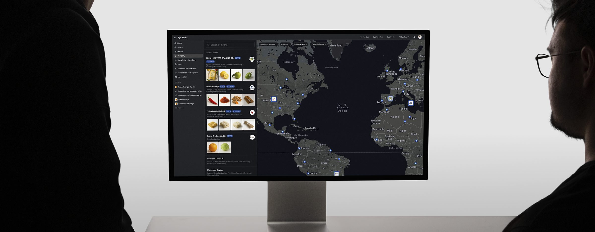
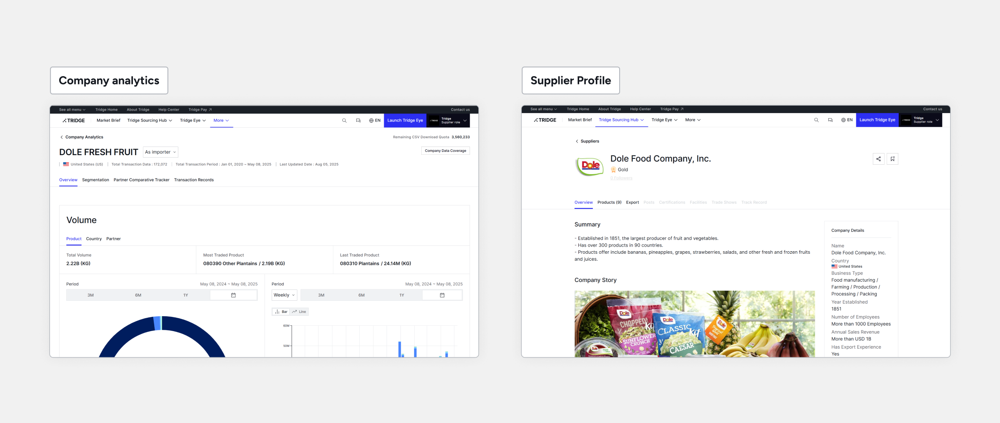
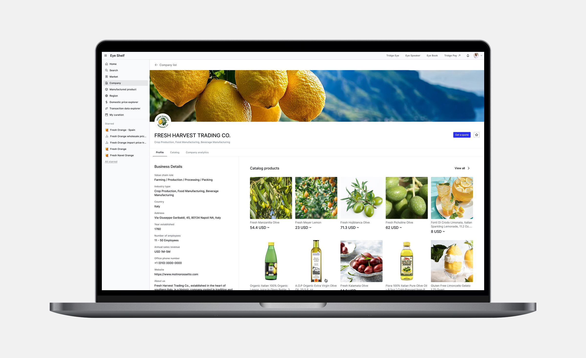
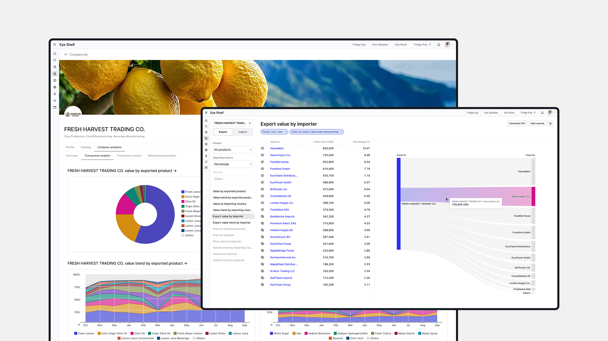
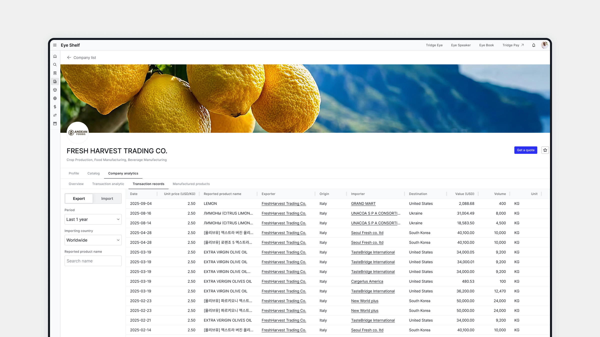
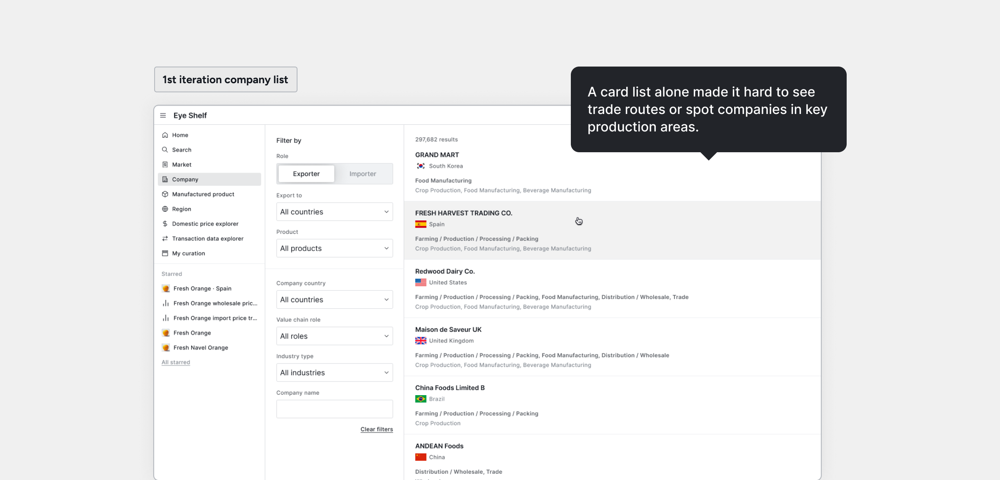
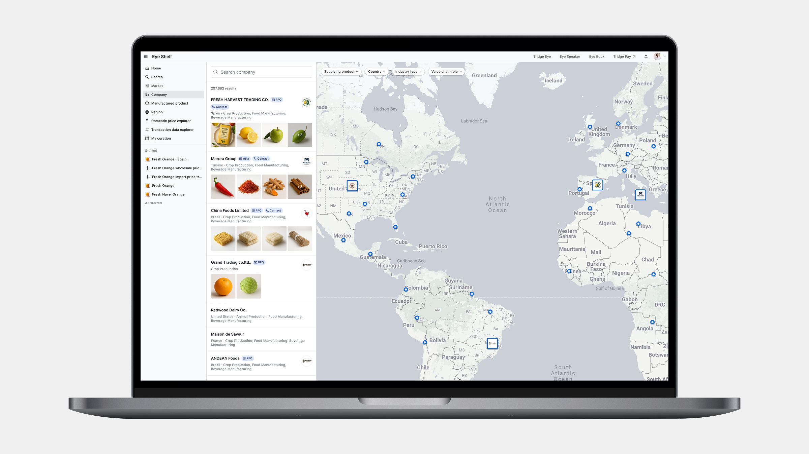
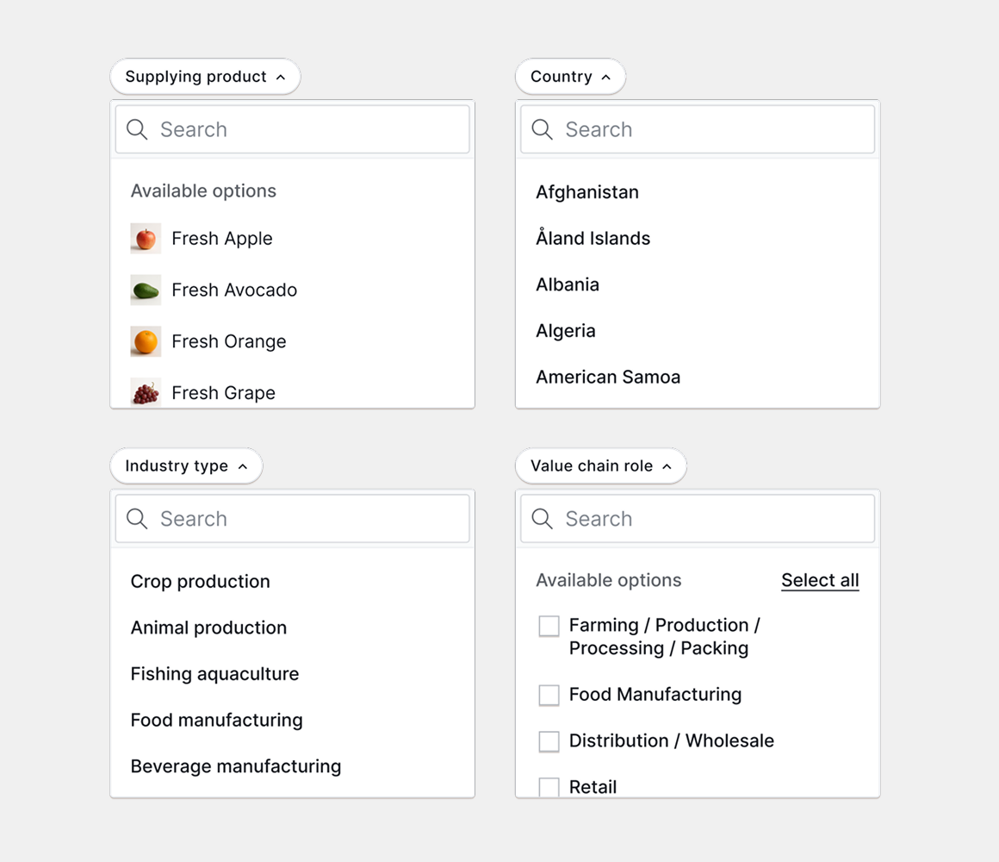
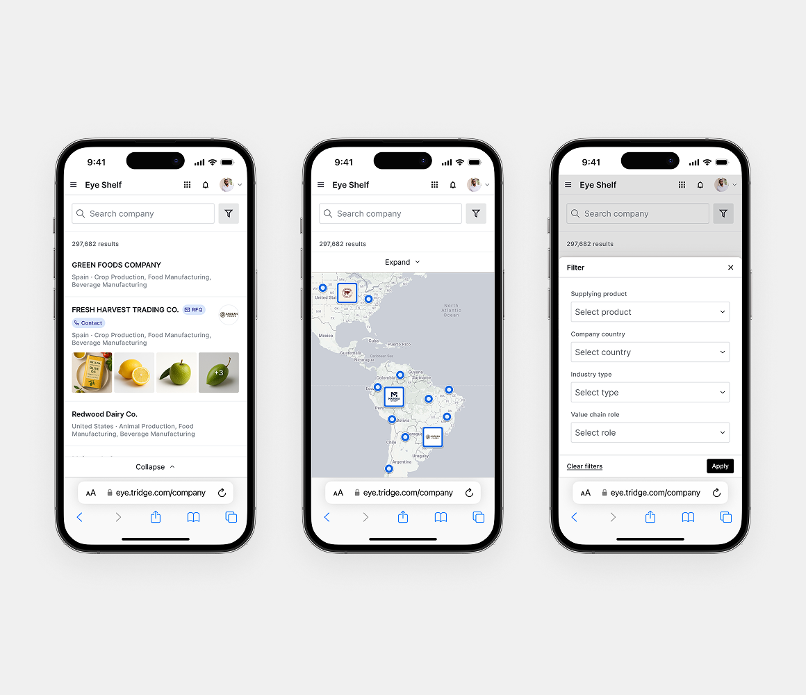

Tridge
Food Trade Company Directory
Where food companies find their next trade partner

Supplier connections on a B2B agri-trade platform with 1.2M MAU fell to zero in Q1 2025. Fewer replies made suppliers lose interest, which led to even fewer replies. As the service shifted from a marketplace to software for trade teams, the goal was to keep buyers and suppliers connected and get users exploring and contacting companies again.
I redesigned the directory in two iterations, first the company pages and then a map for exploring.

Problem
Users found promising companies but rarely contacted them, and profile views and interactions stayed low. Traders analyse a company before they trade, much like reading reviews before buying. The old structure kept that analysis on one page and the next step on another.
Insight
Traders see a company as one business, not as a buyer or a seller. Sample trade data from several countries, matched by company name, showed most companies both buying and selling.
Solution
The definition of trade had to widen to cover every step that leads to a purchase, not just the final deal. The data governance team and I turned that definition into one company model that serves everything from analysis to quote requests.
Before · Two separate company models
After · One unified company model
01
All company information in one place
Once trade covered every interaction leading to a purchase, each company needed a single home. Every company now has one page with Profile, Catalogue and Analytics tabs that can grow as the data grows. Each company account matches one real company and links to a record that AI built from existing data. Agreeing on this early meant everything about a company could live on one page.
The old profile was built only for suppliers, even though many companies also buy. A manufacturer, for example, buys raw materials and sells finished goods. I rebuilt it as one company profile that works for every company regardless of its role in trade. Trade details come first, while each company's brand story still has room on the page.

Company page
All of a company's information now lives on one page, so users no longer have to jump between two places to understand a single business.
02
From browsing to quoting
Buyers in trade often ask suppliers for a catalogue first, but the old catalogue was a static page meant only for viewing. Now products listed in the seller centre appear on the company page right next to its trade details. Buyers can request a quote for one specific product rather than a whole category.
Analysis lives on the same page too. I turned each company's exports and imports into charts, from total trade volume down to individual records. Users can now read a market and vet a potential partner before they trade.

Trade data at a glance
Every company shows its overall trade volume and the partners behind it, which helps users spot new opportunities such as export markets and supply deals. Users can also look into other players in the same market.

Down to single records
Users can switch between export and import data and scan public customs records to decide with more confidence before they trade.
03 · 2nd iteration
Finding companies on a map
After the first iteration, users still had to open each profile to see where a company was based. Browsing unfamiliar companies was slow, so they mostly searched for ones they already knew. The directory became a place to revisit them rather than to discover new suppliers.
In food trade, the same product differs by origin. Lemons from Italy and from Spain vary in quality and price, and distance sets shipping time and cost. That is why location is often the first filter when buyers look for new suppliers. People already explore data on maps every day, from navigation apps to property sites. I put every company on a map where the list and the map move together as users explore.


Ranking that rewards complete profiles
The directory holds over 150K companies and keeps growing, so loading everything at once would overwhelm both users and the system. Ranking brings the most relevant companies to the top, and every detail a company adds moves it further up.

Filters that match how traders search
Some areas pack so many companies together that their pins overlap on the map. Filters for product, country, industry and value chain role follow the way traders narrow a search, so users can find relevant companies even when many different types of company share one region. Value chain role shows where a company sits in trade, from sourcing to distribution.

Mobile kept to the essentials
As a work tool, the service was designed web-first. On mobile the list sits over the map and filters open in a modal, which keeps a small screen easy to scan.
Results
Better discovery, stronger engagement
I set up the Amplitude charts for this project and followed how users moved from Home to a company profile. Data covers July to September 2025, when the sales team first offered the feature, and growth figures compare August with September.
The directory became the most visited feature in the service. From August to September 2025, the share of Home visitors who opened a profile rose 1.8x. Each active company account viewed 146 profiles on average in September, up from 23 in August. 60% of profile views came from browsing the ranked list rather than searching for a name, which suggests users were discovering new companies.
The directory was also part of what the sales team offered in new deals. Clients included Loblaw in Canada and Simplot, a major supplier of McDonald's fries. In South Korea nine manufacturers signed on, each with over USD 700M in annual sales. Three of them later renewed after expanding their use of the service.
1.8x
Profile conversion
6.3x
Profiles viewed per active company
60%
Profile views from the ranked list
Aug – Sep 2025, measured in Amplitude
Share of Home visitors who reached each step
Home
Company list
Company profile
More visitors reached a profile
The gain came from more Home visitors entering the company list. Once there, nearly nine in ten opened a profile in both months. The second iteration mainly drew more people into exploring, rather than changing what they did once they arrived.
Profiles viewed per active company
Browsing across the directory
Users were no longer opening a few profiles they already knew. They were browsing widely across the directory, which is what the ranked list and the map were designed for.
Where profile views started
Most views came from browsing
In the old service users mostly searched for names they already knew. Browsing now led, which suggests the directory had become a place to discover new companies.